Description de ServiceNow
ServiceNow est une plateforme cloud qui offre des solutions pour la gestion des services informatiques (ITSM) et l'automatisation des processus métier. Elle permet aux entreprises de centraliser, automatiser et simplifier leurs workflows à travers des applications personnalisables, tout en favorisant la collaboration entre les équipes. ServiceNow propose une gamme d'outils pour la gestion des incidents, des problèmes, des changements, ainsi que pour le suivi des actifs et des configurations. Sa capacité à intégrer diverses fonctions (RH, sécurité, finance, etc.) en fait une solution centrale pour améliorer l'efficacité opérationnelle et la satisfaction des utilisateurs, en réduisant les coûts et en augmentant la productivité. Grâce à son architecture flexible et évolutive, ServiceNow est utilisée par des entreprises de toutes tailles pour optimiser leurs opérations et soutenir la transformation numérique.
Fonctionnalités Principales de ServiceNow
1. Gestion des Services Informatiques (ITSM)
- Gestion des Incidents (Incident Management) : Suivi et résolution rapide des incidents afin de minimiser les interruptions de service. 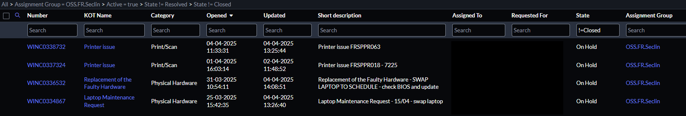
- Gestion des Demandes (Request Management) : Gestion des demandes des utilisateurs pour du matériel, des logiciels ou d’autres services. 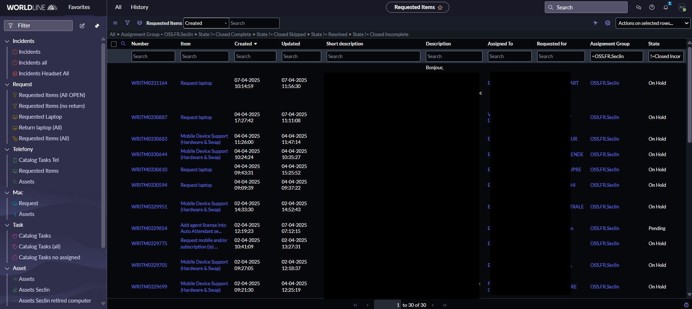
- Gestion des Actifs et des Configurations (Asset and Configuration Management) : Suivi des actifs (serveurs, matériel) et des configurations de l'infrastructure informatique. 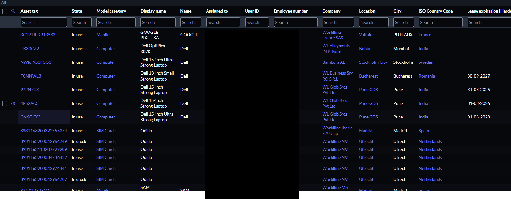
- Gestion des Niveaux de Service (Service Level Management) : Suivi des contrats de niveau de service (SLA) pour s’assurer que les engagements sont respectés. 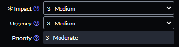
2. Gestion des Ressources Humaines (HR Service Management)
- Automatisation des Processus RH : Gestion des demandes des employés, intégration des nouveaux arrivants, gestion des congés, et autres processus RH automatisés. 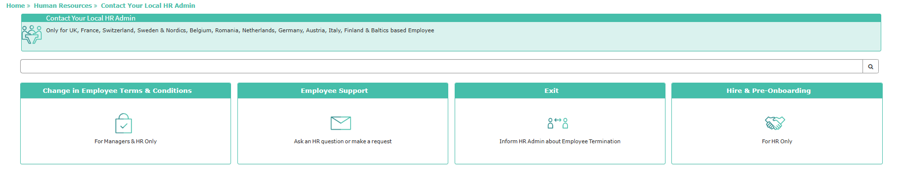
3. Base de Connaissances (Knowledge Management)
- Création de Contenu : Développement de documents de base de connaissances pour aider les utilisateurs à résoudre leurs problèmes.
- Accessibilité et Recherche : Outils de recherche pour aider les utilisateurs à trouver rapidement des solutions aux problèmes rencontrés.
- Collaboration : Collaboration entre les utilisateurs pour enrichir la base de connaissances avec des informations pertinentes.
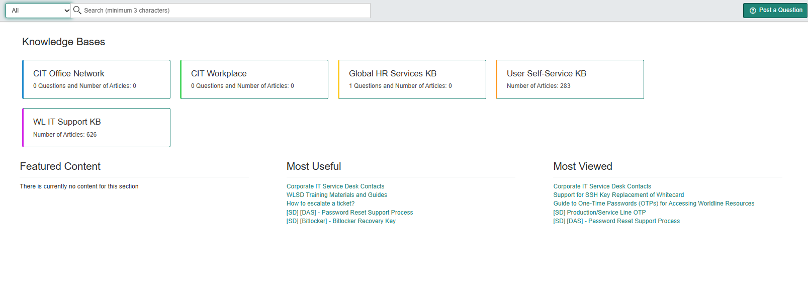
4. Gestion des Expériences Utilisateurs (User Experience Management)
- Portail Utilisateur : Interface conviviale pour les utilisateurs finaux, leur permettant d’accéder facilement aux services, soumettre des demandes et suivre l'avancement.

5. Analyse et Reporting (Reporting and Analytics)
- Rapports Personnalisés : Création de rapports sur les performances des services, des incidents, des demandes, etc.
- Dashboards Interactifs : Visualisation des données sous forme de graphiques et tableaux de bord dynamiques pour un suivi en temps réel.
- Analyse Prédictive : Utilisation de l’intelligence artificielle pour prévoir les incidents, les besoins en ressources, et optimiser les processus.
6. Accessibilité
- Accessibilité Web : Interface utilisateur accessible depuis n’importe quel appareil connecté à Internet, ce qui facilite l’utilisation à distance.
Description d'Azure
Microsoft Azure propose une solution robuste pour la gestion des appareils, permettant aux entreprises d'enrôler, d'affecter et de gérer efficacement les dispositifs au sein de leur infrastructure. Cette fonctionnalité est essentielle pour garantir la sécurité et le bon fonctionnement des appareils, tout en facilitant l'administration des utilisateurs et des ressources. Grâce à une interface intuitive, les administrateurs peuvent facilement ajouter de nouveaux appareils, configurer des paramètres de sécurité, et attribuer des rôles spécifiques pour contrôler les accès aux applications et aux mises à jour. Azure fournit ainsi un cadre solide pour gérer un environnement numérique sécurisé et bien organisé.
Fonctionnalités Principales d'Azure pour la Gestion des Appareils
1. Enrôlement des Appareils
- Processus d'Enrôlement Simplifié : Ajout facile d'appareils à l'environnement Azure via des méthodes automatisées, permettant un déploiement rapide et sans faille.
- Support Multiplateforme : Gestion des appareils sous différents systèmes d'exploitation, y compris Windows, iOS et Android, garantissant une compatibilité étendue.
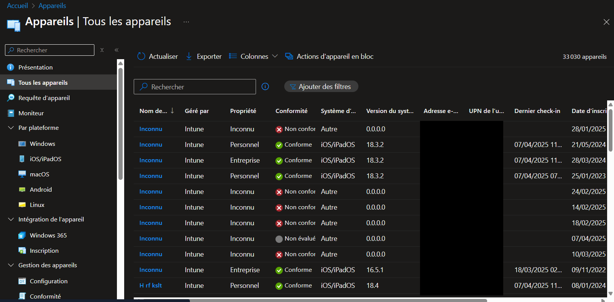
2. Affectation des Appareils
- Affectation Personnalisée : Attribution d'appareils à des utilisateurs ou des groupes spécifiques, facilitant la gestion des ressources au sein de l'organisation.
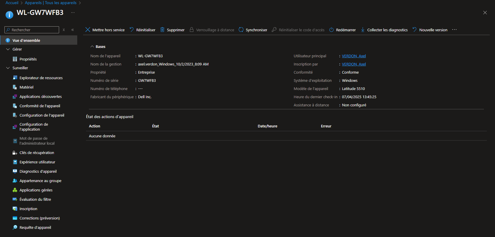
3. Gestion des Rôles
- Contrôle des Accès : Définition de rôles spécifiques permettant de gérer quels utilisateurs ont accès à quelles applications, paramètres ou mises à jour.
- Personnalisation des Paramètres : Configuration des autorisations utilisateur pour restreindre ou permettre des modifications de paramètres sur les appareils gérés.
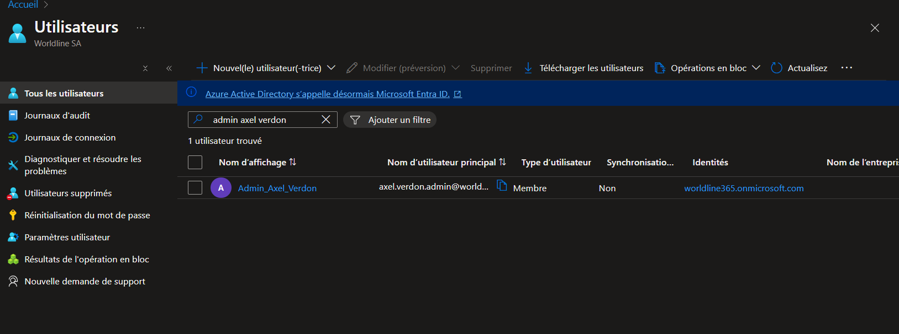

4. Sécurité et Conformité
- Mises à Jour Automatiques : Gestion centralisée des mises à jour de sécurité et des applications, garantissant que tous les appareils respectent les normes de sécurité de l'organisation.
- Politiques de Sécurité : Application de politiques de sécurité pour s'assurer que tous les appareils sont conformes aux exigences de sécurité de l'entreprise.
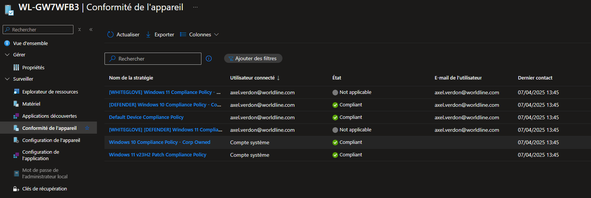 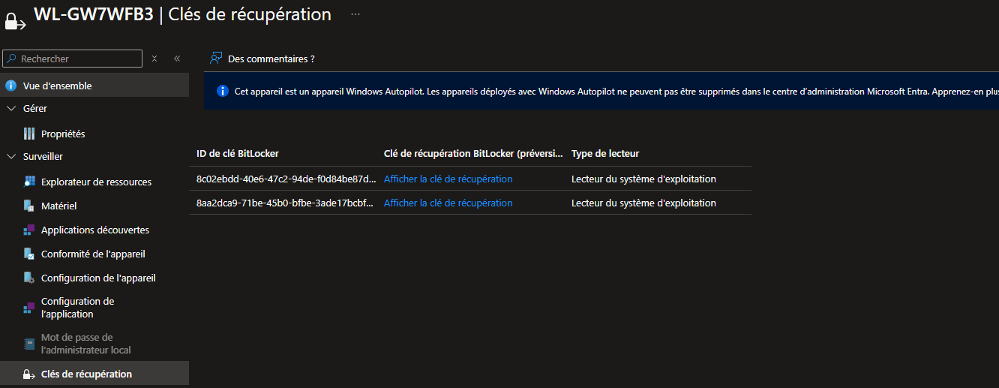